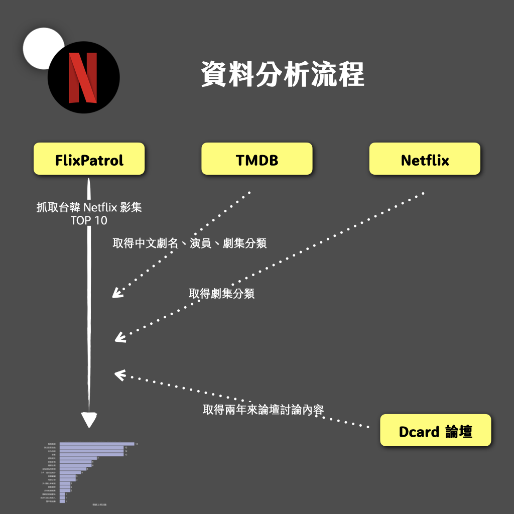

This article is written in Chinese.
2022.06.16 · 專題幕後 · 數據圖表
【專題幕後】Netflix 排名資料分析過程大公開
從「類型」作為出發點，輔以加以針對 Netflix 台灣站與韓國站做比較，也確實看出一些不同之處，包含其實 Netflix 韓國站確實有相當多實境與綜藝內容，而韓國群眾也喜歡使用 Netflix 收看，個人就覺得這個相當有趣的。
本篇適合：對資料新聞、資料分析有興趣的人；初學程式語言的人
本篇重點：談談這篇報導的動機來源與規劃脈絡，並呈現在資料分析過程中可能面臨的困難。此外，介紹我們所使用的網頁呈現方式：《報導者》開源的左右互搏版型。
全文報導連結
連結：https://alan000322.github.io/KoreaDrama-TaiwanNetflixAnalysis/
報導動機與規劃脈絡
這是一門台大新聞所謝吉隆老師所開的「新聞資料處理與視覺呈現」課程的期末專題，確實比起其他組別都點出社會上的結構問題（佩服大家），這次我們這組選了一個娛樂新聞的題材。而我覺得對於自己來說，一來時間關係可能不希望做太大規模的專題，一來對於資料新聞仍然是初學者，怕在操作有所偏誤，因此希望選擇相對親近卻又值得探討的主題。
Netflix 分析與 Dcard 文本分析並非首創
當下我們決定這個主題時，其實組員們都蠻滿意的（應該啦xD），不過，其實也這當中也發現 Netflix 這個主題已經有不少人做，而且「韓流來襲」早就是一個大家熟知的現象了。 （其實個人有點絕望0.0）
那如何選題、如何切入變成了主要的難題。
- 子軒學長做的 Netflix 分析，基本上有一些想法跟圖表我們是效法他的 ><
- READr 透過 Netflix 排行榜希望探討臺劇出路在哪。
- READr 爬梳 Dcard 數據探討網路用語趨勢
雖然前人做了這麼多，但我們當下想到的是希望或許能將每一部劇的「類型」拉出來參考（這同時也是子軒在上文中建議的分析方式），然而就是因為我們也不太確定分析結果合乎預期，也相當忐忑。最後呈現的方式雖就是從「類型」作為出發點，輔以加以針對 Netflix 台灣站與韓國站做比較，也確實看出一些不同之處，包含其實 Netflix 韓國站確實有相當多實境與綜藝內容，而韓國群眾也喜歡使用 Netflix 收看，個人就覺得這個相當有趣的。
Dcard 文本分析：始終的疑惑——能有所「新發現」嗎？
因為還是資料新聞的小菜雞，一直以來在做這種文本分析的時候，發現的問題就是我們是真的能從這樣的分析方式「探討」出什麼結果嗎？中文句詞結構如此複雜，斷詞、停用詞庫也難保全然精準，最終的結果是否真有其意義？
目前進行文本分析的方式有非常多，我也透過這次的機會一一檢視了每個計算方式背後的演算法，無論是單純的詞頻分析、TF-IDF、Co-occurrence Matrix 的應用、其衍生的演算法（Text Rank）、主題分析（如 NMF 演算法等），確實有相當多的工具，但也因為演算法所著重的方向不同，皆可能導致產生的結果差異，作為菜雞的我可能未來有機會也會好好思考跟研究這個面向的知識（有機會的話也會再上來寫點想法 ><）。
回到「意義」層面，如果透過這些複雜的數據分析方式，最終得到的只是常識、不太意外的結果，讓我會覺得這其實是無意義的分析。
在這次的分析中其實就是這樣，我也始終一直問自己的是，選用《單身即地獄》的 Dcard 分析，最終結果似乎並沒有那麼的有趣或值得討論。這或許是未來值得持續改進的地方。
不過我也從中嘗試做了修正跟思考新的切入點，例如同樣是戀愛實境劇，被譽為韓版《慾罷不能》的《單身即地獄》，會不會跟《慾罷不能》在論壇上的討論有所不同。我個人覺得是一個非常好的切入點，更可以衍生的是背後形成的文化脈絡。但後來考量到整體報導敘事太過龐雜，最後就選擇放在附錄之中。
如同前文所述，除了正文以外，我們在文章中的最後也提供了許多「遺珠之憾」的圖表，鼓勵大家也可以看看並提供意見。
資料來源與處理困難
資料爬梳流程

我們利用 R 從 FlixPatrol 上抓下台灣、南韓 2020 年 8 月至 2022 年 5 月的每週影劇 TOP 10（一開始是用 Python，但後來想說嘗試新工具 xD），再透過 TMDB 及其 API 取得相關中文片名以及影劇資訊（上映日期、演員、類型等）。
中文片名取得方式
第一個遇到最大的困難就是「中文片名」如何取得，前人曾經提到使用 Wiki 的服務做抓取，後來我們選擇透過 TMDB 取得中文劇名，然而英文劇名對應中文劇名並非如此明確，所以仍要花蠻多的時間進行人工檢查是否有錯誤。
TMDB 類型太過籠統，最後選擇使用 Netflix 上的類型分類
TMDB 提供的幾個類型我們也覺得過於籠統，後來選擇使用 Netflix 上的類型分類，但暫時還不太會爬取 Netflix 資料，所以是手動處理 xD（等待未來技術更加精進(??)）。
此外，「劇情」類型的這類戲劇我們都改為其他分類，主因是「劇情」類別太為籠統。
網頁呈現：《報導者》開源的左右互搏版型
當下在製作報導之前，我就想到可以用左右互搏的方式呈現報導。雖然課程中並沒有要求要製作網頁，但評估了一下花的時間應該不多，可以在一天內把整個網也雛型建立起來，所以就決定嘗試。
不過為什麼評估能在「一天內」完成，主因是因為知道《報導者》提供開源的「左右互搏版型」，雖然是在有限的空間製作，但應該可以發揮最大的功效最大的功效。
使用方式與操作連結放在下面供大家參考：
https://medium.com/twreporter/twreporter-lab-dual-channel-news-tool-5c13c7a83e24
再次感謝我的超讚組員嘉蓮跟陳寧，真的缺一不可！！也要感謝授課的謝吉隆老師和子軒學長提供許多專題上的想法與程式語言的學習課程，真的扎實且收穫良多。
這是第一次嘗試，老實說自己也覺得有不少進步的空間，也歡迎大家提供一些想法！